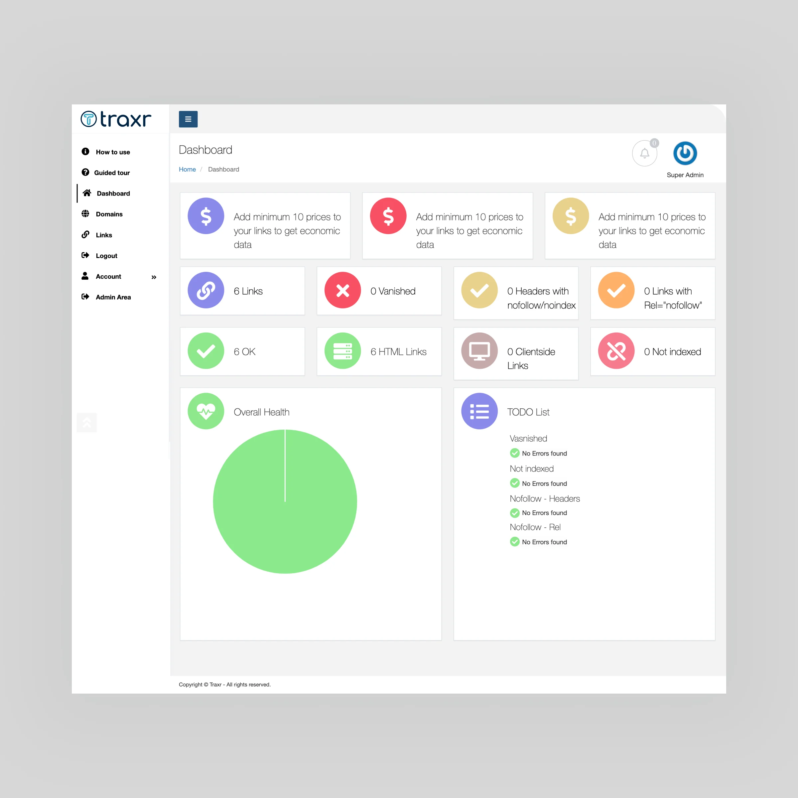
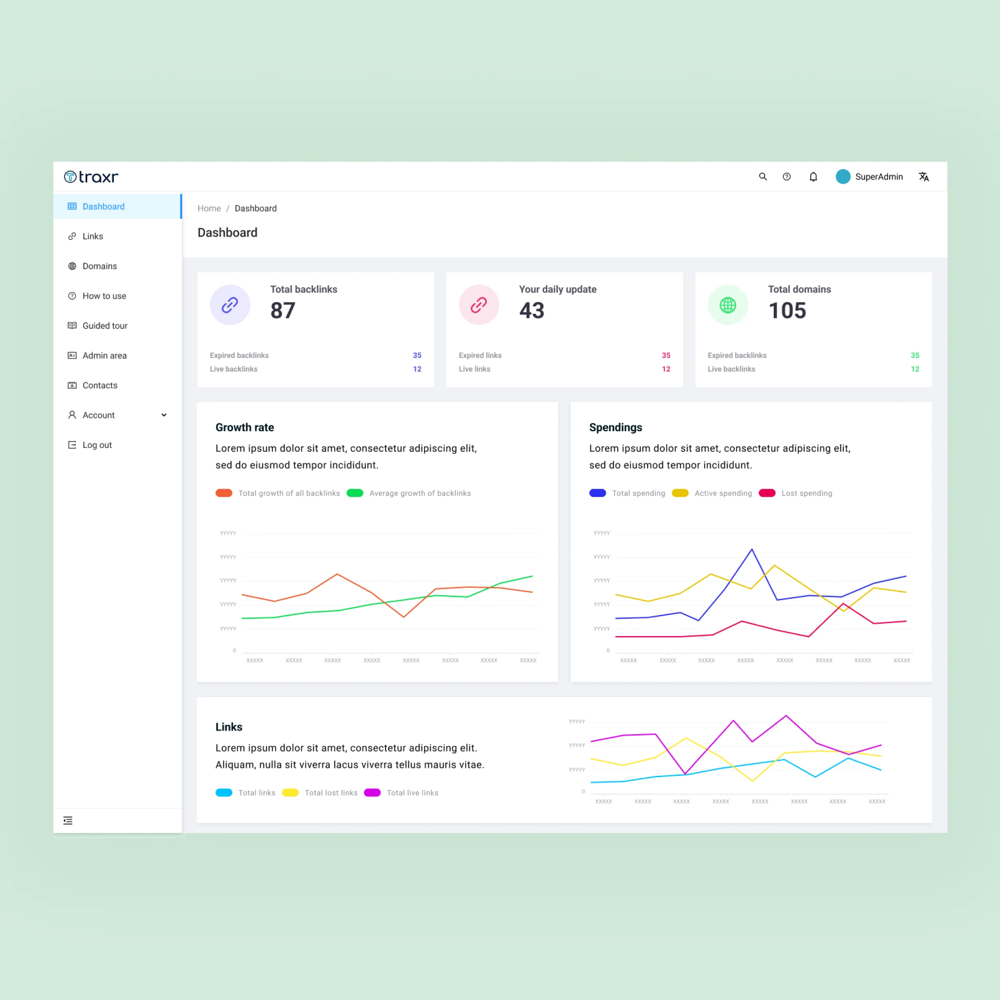
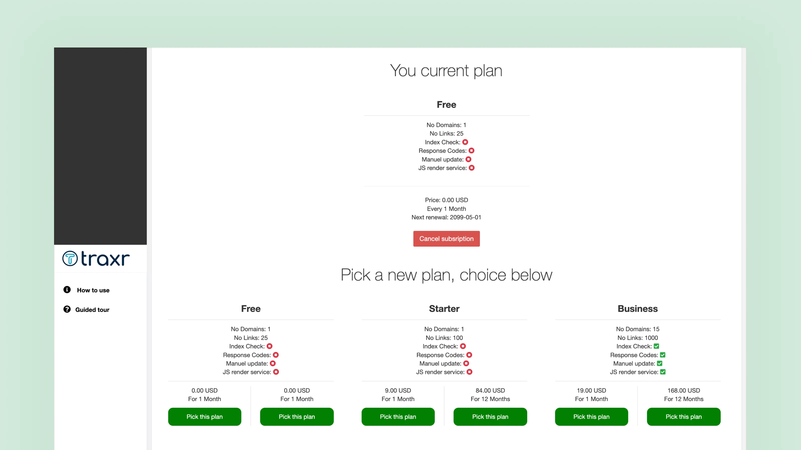
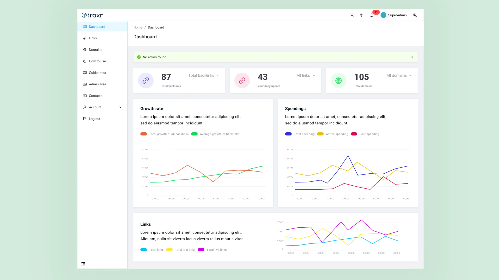
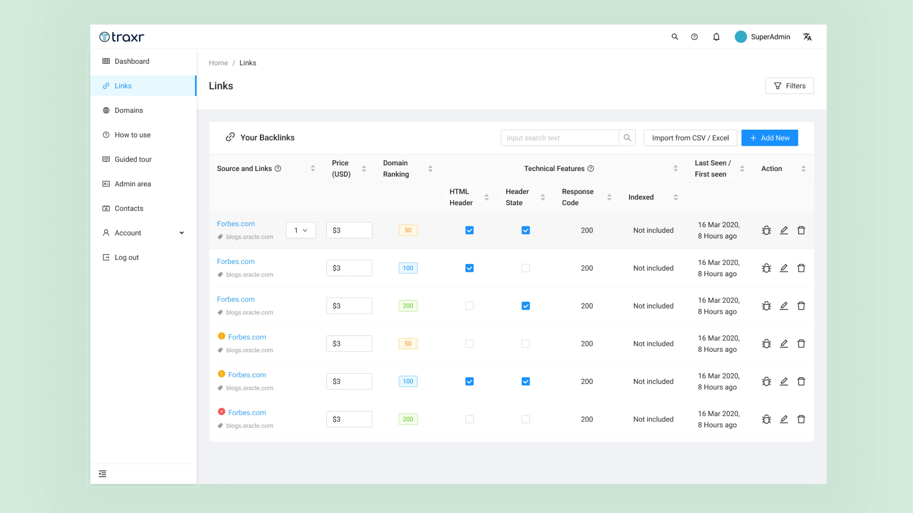
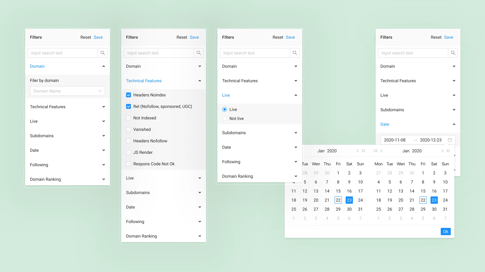

Overview
Traxr is a SaaS platform for SEO specialists, agencies, and freelancers. It combines backlink monitoring with CRM and financial-management tools, helping users track links, manage deals, and understand where their budget is going.
The platform supports several day-to-day SEO workflows:
- Monitoring whether backlinks are live, lost, or indexed
- Managing link-buying and link-selling activity
- Recording pricing, contacts, and deal history
- Tracking spend and evaluating return on investment
- Automating link-to-domain matching and sending alerts when links are added or removed

Before
AfterThe challenge
The original product was functional, but it made routine work feel harder than it needed to be. The interface looked dated, pages were visually crowded, and important information was difficult to scan quickly.
For SEO specialists, this matters. Backlink management often involves reviewing large amounts of data and acting on changes fast. The product needed to help users answer simple questions at a glance like "What changed?" or "Does anything need attention?"
A major competitor handled backlink data well through a clean, table-first interface. That became a useful reference point, not to copy, but to understand what Traxr needed to improve: a stronger data structure, clearer status signals, and less visual distraction.
Problems in the old experience
Too much visual noise
Gradients, shadows, and inconsistent icon styles competed for attention. The product felt closer to an older admin dashboard than a modern SaaS tool.
Weak information hierarchy
The dashboard used many cards with similar visual weight, making it hard to tell which metrics mattered most. On the Links page, dense tables and permanently visible filters made scanning more difficult.
Confusing navigation
The sidebar contained many destinations without a clear sense of grouping or priority. Helpful items such as "How to use" and "Guided tour" felt disconnected from the main workflow.
Space was not used effectively
Some pages contained large empty areas while charts and useful data were compressed, stretched, or difficult to compare.

The old interface: everything competing for attention at the same visual weight.
Design direction
The redesign focused on reducing friction between data and action. Instead of showing everything at once, the interface gives priority to the information that helps users make the next decision.
Three principles guided the work:
Prioritize information
Surface important changes and metrics first; move secondary details deeper into the interface.
Keep users in context
Use inline actions, modals, and slide-out panels instead of forcing users onto separate pages.
Support repeatable workflows
Let users save filters and return to the same working view without rebuilding it every time.
Dashboard
The new dashboard uses a quieter visual system: more whitespace, clearer typography, restrained color, and simple icons.
At the top, three KPI cards show the most important high-level metrics: total backlinks, daily updates, and total domains. This gives users an immediate sense of the account's current state before they move into more detailed analysis.
Below, charts for backlink growth, spending, and link activity are easier to read because the visual clutter has been removed. Legends are clearer, chart lines are easier to follow, and the page focuses on the metrics most likely to inform the next action.
Navigation was also reorganized so guidance tools are easier to find without competing with core product areas.

The new dashboard: three KPIs at the top, clear charts below, no visual noise.
Links workspace
The Links page was redesigned around a table-first structure, since reviewing and comparing backlink records is one of the platform's main jobs.
The table now organizes information into clearer columns:
- Source and linked page
- Price
- Domain rating
- Technical attributes
- First seen and last seen dates
- Available actions
Filters no longer occupy a large part of the screen by default. Instead, users open them only when needed through a single Filters button. This keeps the table visible and gives more room to review records.
Users can also view, edit, or delete a link directly from the table, reducing unnecessary page changes. Import, export, and "+ Add New" actions are placed where users expect to find them.

The new Links page: cleaner table, collapsed filters, inline actions.
Filtering as a workflow
In the old product, filtering took up too much space and remained open even when users were not actively using it. The redesigned version moves filters into a slide-out panel on the right.
Rather than presenting a long list of technical settings at once, options are grouped around how people think about their work:
- Technical features: noindex, nofollow, sponsored, UGC, JavaScript rendering, and response-code issues
- Live link status
- Subdomains
- Date ranges
- Link-following type
- Domain rating
Accordion sections keep the panel manageable, while saved filter presets make repeated tasks much faster. For example, someone who regularly checks noindex links added during the past week can save that view instead of rebuilding it every time.

The new filter: a slide-out panel with accordion groups and saved presets.
Outcome
The redesign turned Traxr from a tool that mainly displayed data into one that better supports decisions.
The new interface makes important states easier to spot, keeps users in the same workflow while they take action, and reduces repetitive setup work through persistent filters and saved presets. Instead of treating every data point as equally important, the experience helps users focus on what has changed and what deserves attention next.